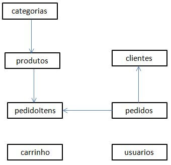
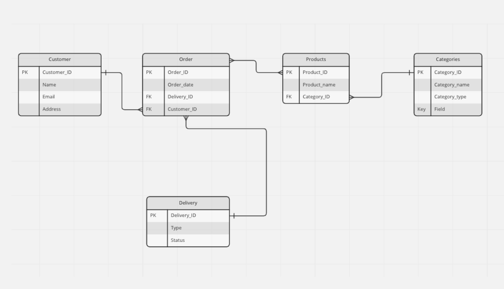
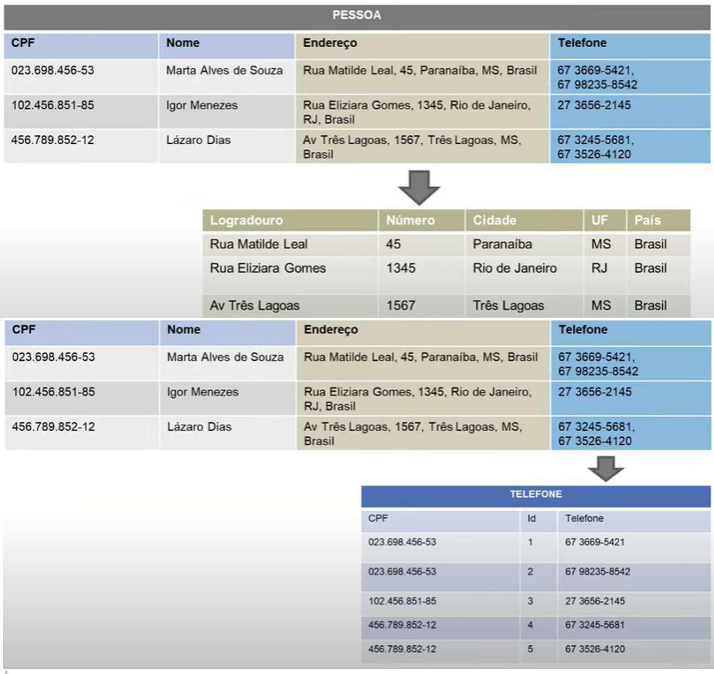
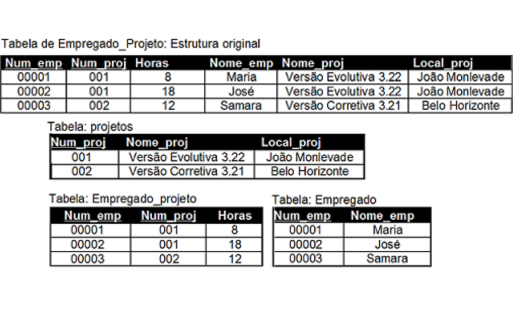
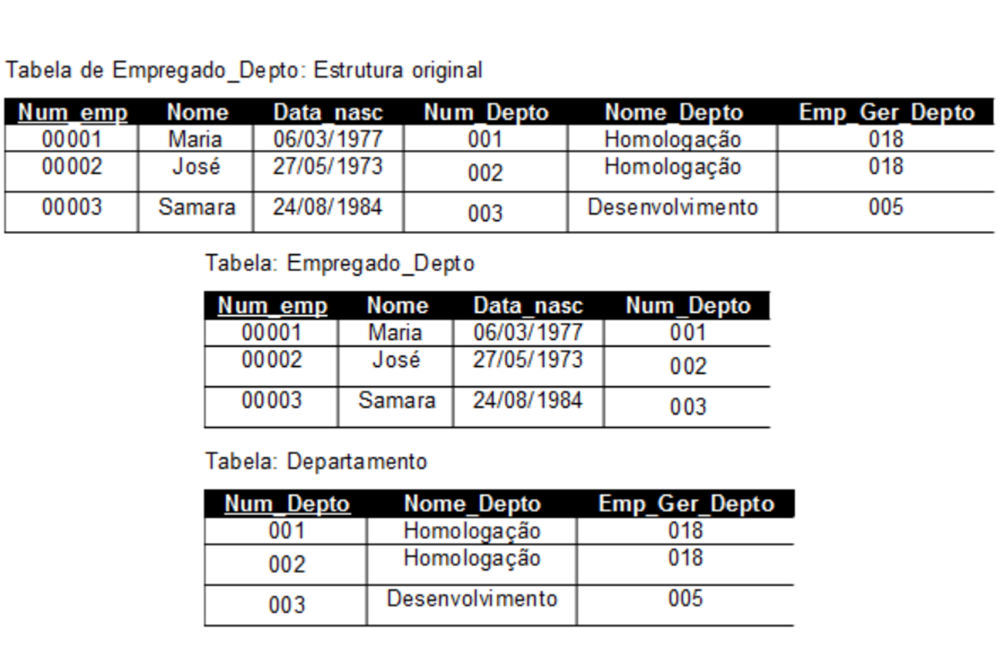

Um banco de dados é um sistema organizado de armazenamento de dados que permite a criação, manipulação e recuperação eficiente de informações. Ele é projetado para armazenar grandes volumes de dados de forma estruturada e organizada, permitindo o acesso rápido e eficiente aos dados quando necessário.
Existem vários tipos de bancos de dados, cada um adequado para diferentes necessidades e aplicações.
Arquitetura ANSI

Nível Interno: Também chamado de Físico, descreve a estrutura de armazenamento físico do banco de dados. Esse esquema utiliza um modelo de dado físico e descreve os detalhes completos do armazenamento de dados e caminhos de acesso ao banco de dados.
Nível Externo: Também chamado de Visão, abrange os esquemas externos ou visões de usuários. Cada esquema externo descreve a parte do banco de dados que um dado grupo de usuários tem interesse e oculta o restante do banco de dados desse grupo.
Nível Conceitual: Também chamado de Lógico, possui um esquema conceitual, que descreve a estrutura de todo o banco de dados para a comunidade de usuários. O esquema conceituai oculta os detalhes das estruturas de armazenamento físico e se concentra na descrição de entidades, tipos de dados, conexões, operações de usuários e restrições.
Entidade Relacionamento
Este foi um dos primeiros assuntos para Banco de Dados, pois é muito importante planejar como que o sistema irá funcionar, e isso é o Modelo Entidade Relacionamento, para desenvolvê-lo, trabalhamos junto ao cliente, e através do que foi pedido, identificamos as entidades, se forte ou fraco e identificamos também o relacionamento entre elas. Tendo o Diagrama ER em mãos, facilita muito a vizualização do projeto, como na imagem ao lado.

Modelo Lógico

Aqui já começa a ficar mais complexo, pois é aqui que vamos organizar o funcionamento do banco de dados, ou seja, a partir daqui é importante entender como o Modelo Físico funciona. Nesta etapa é definido as Chaves Primárias, que devem ser únicas, também é definida as Chaves Secundárias, identificado cada atributo das entidades, também, se for preciso, é criado novos atributos e tabelas (normalização), é também identificado as cardinalidades, 1 → 1, 1 → n, n → n, etc, com isso, é importante criar um esboço parecido com a imagem ao lado. Sendo assim, passamos para a fase de melhoria, ou seja, se é possível otimizá-lo, ou se há algum erro!. Feito isso, podemos prosseguir para o Modelo Físico.
Modelo Físico

SGBD: Os SGBD'S são compostos por um servidor SQL, uma interface de desenvolvimento, ferramentas de linha de comando, entre outras facilidades. Neste caso utilizamos o PostgreSQL. Importante se atencar ao ACID (Atomicidade, Consistência, Isolamento e Durabilidade.)
Comandos DDL: Um dos comandos principais estão aqui, onde 'Define' as entidades, ou seja, a criação de tabelas. Exemplos: Create Table, Alter Table, Drop Table.
Comandos DML: Na 'Manipulação', como o nome diz, iremos modificar a tabela que criamos. Exemplo: Insert, Update, Delete.
Comandos DQL: Na parte de 'Consulta', iremos vizualizar nossas tabelas de acordo com o que definimos, por exemplo, na ordem que queremos que apareça, ou somente algumas colunas especificas, etc. Exemplo: Select, Order By, Group By, Join, entre outros comandos.
Veja com detalhes os meus projetos
Respositório GitHub
Normalização

Normalização é o processo de organização de dados em um banco de dados. Isso inclui a criação de tabelas e o estabelecimento de relações entre essas tabelas de acordo com as regras projetadas para proteger os dados e tornar o banco de dados mais flexível, eliminando a redundância e a dependência inconsistente.
Neste vídeo ao lado, foi feito uma normalização de uma tabela gigante que contém informações dos tripulantes do navio Titanic. Esta atividade foi dividida em squads, minha squad ficou responável pela normalização da tabela "Passengers", vista no vídeo em um arquivo Excel, que nos ajudou a organizar tudo antes de implementarmos no Colab.
Primeira Forma Normal

Uma tabela esta na 1ª FN quando:
- Somente possui valores atômicos
- Não há grupos de atributos repetidos (há apenas um dado por coluna nas linhas)
- Existe uma chave primária
- Relação não possui atributos multivalorados ou relações aninhadas
Segunda Forma Normal
Uma relação esta na 2ª FN quando:
- Está na 1FN
- Não contém dependências parciais

Terceira Forma Normal

Uma relação esta na 3ª FN quando:
- Está na 2FN
- Não contém dependências transitiva. A relação não deve ter um atributo não-chave funcionalmente determinado por um outro atributo não-chave